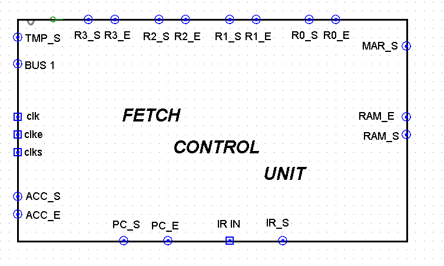
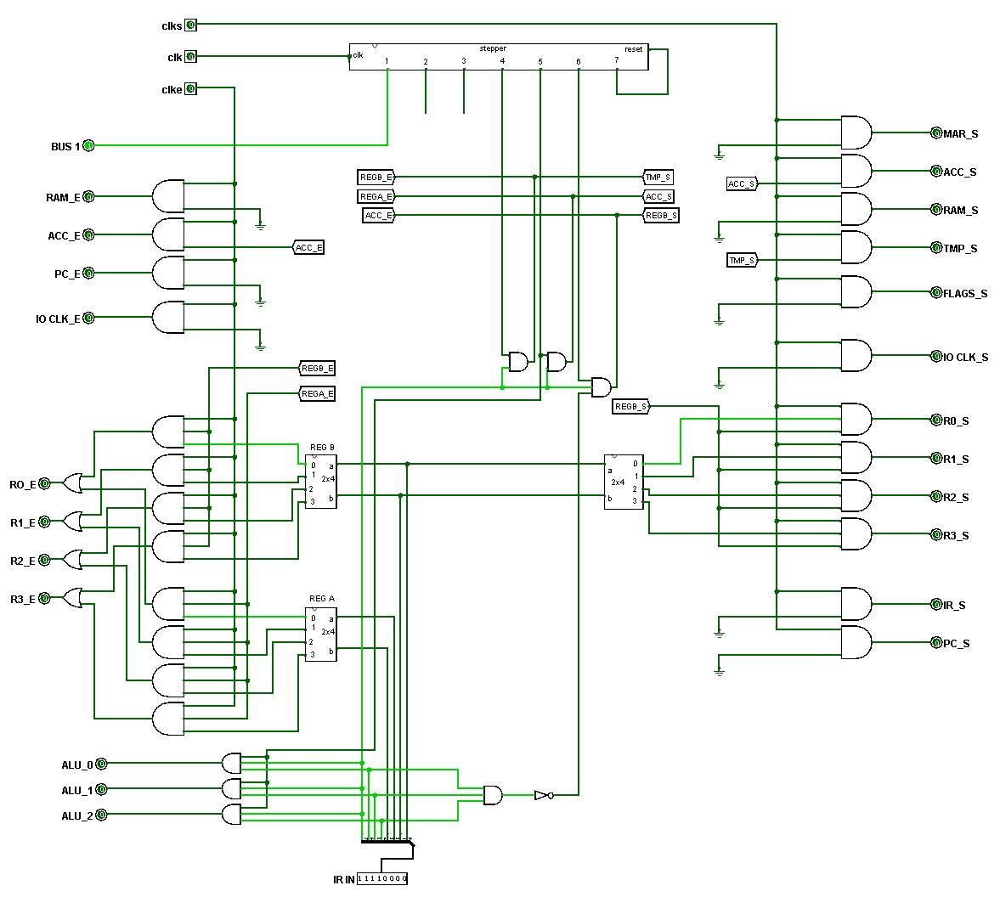

Assignment 11 — The Control Unit
100 points | Week 11 | Logisim Checkpoint 5 + Canvas quiz | Due Sunday 11/01, 11:59 pm
What you submit
| Part | What it is | How | Points |
|---|---|---|---|
| A | Logisim Checkpoint 5 — the clock, the stepper and the control unit, running your CPU core | .circ file + 10 screenshots | 60 |
| B | Canvas quiz on the four Week 11 pages | in Canvas: 16 questions, auto-graded | 40 |
Part A — Logisim Checkpoint 5 (60 points)
Three new tabs — CLOCK, STEPPER and CONTROL_UNIT — and changes to your CPU tab so that the control unit, not you, drives the core. Pages 1–3 of this week explain every gate; read them first.
MEM_1BIT from Week 4; DECODER_3TO8 from Week 3; ALU_8BIT from Week 7; everything on the CPU tab from Week 10. Instantiate them. Do not rebuild them. The one change to an existing tab is a single pin attribute in ALU_8BIT, below.
Tab CLOCK — these pin names are exact
| Pin | Width | Direction | Meaning |
|---|---|---|---|
clk_in | 1 | in | the input you click — pull-down |
clk | 1 | out | the flip-flop’s Q, to the stepper |
clk_e | 1 | out | high in the three enable quarters |
clk_s | 1 | out | high in the set quarter only |
Inside: one J-K flip-flop from Logisim’s Memory folder — the only part this week from outside Wiring and Gates — with J and K tied to a constant 1 and its clock input from clk_in. Q → clk. clk_in NAND Q, through a NOT, → clk_s. clk_in NAND Q̄ → clk_e. Two NANDs, one NOT (page 1, §11.3).
Tab STEPPER — these pin names are exact
| Pin | Width | Direction | Meaning |
|---|---|---|---|
clk | 1 | in | from the clock — pull-down |
reset | 1 | in | empties the chain — pull-up |
step1 … step7 | 1 each | out | exactly one high at a time |
Inside: twelve MEM_1BIT instances in a row, Q1 to Q12, each one’s output to the next one’s input; NOT reset into Q1. Set of Q1, Q3 … Q11 = reset OR clk; set of Q2, Q4 … Q12 = reset OR NOT clk. step1 = reset OR NOT Q2; stepk = Q(2k−2) AND NOT Q(2k) for k = 2 to 6; step7 = Q12. Three ORs, eight NOTs, five ANDs (page 2, §11.7). Edit the appearance: clk on the left, reset on the right, the seven steps along the bottom.
Tab CONTROL_UNIT — these pin names are exact
| Pin | Width | Direction | Meaning |
|---|---|---|---|
clk, clk_e, clk_s | 1 each | in | from CLOCK |
ir | 8 | in | the instruction |
ra, rb | 2 each | out | ir bits 3–2 and 1–0, to REG_SELECT |
rega_e, regb_e, regb_s | 1 each | out | to REG_SELECT |
tmp_s, acc_e, acc_s, flags_s, bus1 | 1 each | out | to TMP, ACC, FLAGS and BUS1 |
opcode | 3 | out | to the ALU |
steps | 7 | out | step1 … step7 combined, step1 as bit 0 — for a probe |
Inside: one STEPPER instance with clk in and step7 wired to its own reset. Class lines: ir bit 7 is the ALU line; bits 6–4 into a DECODER_3TO8, each of its eight outputs ANDed with NOT bit 7 — build all eight, wire only output 6 (CLF) this week; CMP = bits 6, 5 and 4 ANDed (page 3, §11.10). Then the control table:
| Output | = |
|---|---|
| regb_e | step4 AND ALU AND clk_e |
| tmp_s | step4 AND ALU AND clk_s |
| rega_e | step5 AND ALU AND clk_e |
| acc_s | step5 AND ALU AND clk_s |
| flags_s | ( (step5 AND ALU) OR (step4 AND CLF) ) AND clk_s |
| acc_e | step6 AND ALU AND NOT CMP AND clk_e |
| regb_s | step6 AND ALU AND NOT CMP AND clk_s |
| bus1 | step4 AND CLF |
| opcode | ir bits 6–4, each AND (step5 AND ALU) |
Lay it out as page 3’s figures do: enables down the left, sets down the right, the stepper across the top. Edit the appearance so its outputs face the parts they drive; the figure below is your instructor’s fetch control unit, a guide to the shape only — your pins are the ones in the table above.

CONTROL_UNIT has different pins; place each where its wire wants to go.Tab ALU_8BIT — one attribute
Select the A input pin and set its pull behaviour to pull-down. Nothing else in the ALU changes. CLF depends on it: with nothing driving the bus, the ALU must see 00000000 at A (page 3, §11.11).
Tab CPU — what changes
- Delete the input pins
ra,rb,rega_e,regb_e,regb_s,tmp_s,acc_e,acc_s,flags_s,bus1andopcode. The control unit drives all of those wires now. - Place one
CLOCKand oneCONTROL_UNITin the space you left in Week 10. ConnectCLOCK’sclk,clk_eandclk_sto the control unit, and each control-unit output to the wire its old input pin drove. - Add input pins
clk_in(1, toCLOCK),ir(8, toCONTROL_UNIT) anddata_s(1, pull-down). - The test port: REG_SELECT’s
regb_sinput becomes an OR of the control unit’sregb_sanddata_s. Keepdata,data_eandcias they were;cistays at 0 this week. - Probes on
clk,clk_e,clk_sandsteps, as well as everything you probed in Week 10.
To put a value in a register by hand: set ir so that its last two bits name the register (10000000 for R0, 10000001 for R1, and so on), set data, raise data_e, pulse data_s, drop data_e. REG_SELECT sends data_s to the register named by rb.
Load registers and change ir only while steps shows step 1, 2 or 3 — right after Simulate → Reset, or after the 24th click of an instruction. In steps 4 to 6 the control unit is using the bus and acting on ir.

CPU tab.Points
| Criterion | Points |
|---|---|
CLOCK: four pins exactly, one J-K with J = K = 1, two NANDs and a NOT; the quarters run enable on, set on, set off, enable off | 8 |
STEPPER: nine pins exactly, twelve MEM_1BIT instances, the set and step logic as listed, pull behaviours set, appearance edited | 12 |
CONTROL_UNIT: pins exactly; a STEPPER with step7 to reset; the DECODER_3TO8 and its eight class ANDs; the CMP gate; every line as in the table, enables with clk_e and sets with clk_s; the gated opcode | 18 |
CPU tab: old control pins removed; CLOCK and CONTROL_UNIT wired in; clk_in, ir, data_s and the OR into regb_s; ALU_8BIT’s A pulled down; probes present | 10 |
| Ten verification screenshots, matching the table below | 10 |
| Single file; only Wiring and Gates components, plus the one J-K flip-flop | 2 |
Verify, and screenshot each step
Every input starts at 0. “Click clk_in” means change it once, 0 to 1 or 1 to 0. steps reads with step 1 at the right. Each step continues from the one before.
| # | Do | Expect |
|---|---|---|
| 1 | Simulate → Reset | steps = 0000001; clk = 0, clk_e = 1, clk_s = 0; every register EEEEEEEE |
| 2 | ir = 10000000; data = 00000101, data_e = 1, pulse data_s, data_e = 0 | R0 = 00000101 |
| 3 | ir = 10000001; data = 00000111, data_e = 1, pulse data_s, data_e = 0 | R1 = 00000111 |
| 4 | ir stays 10000001, which is ADD R0, R1. Click clk_in 13 times | steps = 0001000; clk_e = 1, clk_s = 1; bus = 00000111; TMP = 00000111 |
| 5 | Click clk_in 11 more times (24 in all) | steps = 0000001; R1 = 00001100; R0 = 00000101; C A E Z = 0 0 0 0 |
| 6 | ir = 11100101 (XOR R1, R1); 24 clicks | R1 = 00000000; C A E Z = 0 0 1 1 |
| 7 | ir = 01100000 (CLF); 24 clicks | C A E Z = 0 0 0 0 |
| 8 | Load R2 = 00001001 (ir = 10000010) and R3 = 00000101 (ir = 10000011) as in step 2; then ir = 11111011 (CMP R2, R3); 24 clicks | R2 = 00001001 and R3 = 00000101, unchanged; A = 1, E = 0. Ignore C and Z. |
| 9 | ir = 10100010 (SHL R0, R2); 24 clicks | R2 = 00001010; R0 = 00000101 |
| 10 | Load R3 = 10000001 (ir = 10000011); then ir = 10011111 (SHR R3, R3); 24 clicks | R3 = 01000000; C A E Z = 1 0 1 0 |
Step 4 is the only screenshot taken in the middle of an instruction: step 4, set-on quarter, with R1 on the bus and TMP following it. Step 8’s compare writes no register — that is the CMP gate at step 6 doing its job. Step 9 shows that RB receives the result: R2 ← R0 shifted left. In step 10 the bit shifted out of R3 sets C, and E is 1 because the ALU’s two inputs were both R3.
Submission checklist
- All circuits are contained within this single
.circfile — no external file links CLOCK,STEPPERandCONTROL_UNITpresent, pins named exactly as aboveCONTROL_UNITcontains oneSTEPPERand uses your Week 3DECODER_3TO8; nothing rebuilt- The
CPUtab has nora,rb,rega_e,regb_e,regb_s,tmp_s,acc_e,acc_s,flags_s,bus1oropcodeinput pins left ALU_8BIT’sApin is pull-down; nothing else in the ALU changed- Ten screenshots, one per verification step
- Only Wiring and Gates components used, plus one J-K flip-flop from Memory in
CLOCK— nothing from Plexers or Arithmetic
Part B — Canvas quiz (40 points)
Sixteen questions on the four Week 11 pages, 2.5 points each, every one auto-graded. Open in Canvas from Monday 10/26 until Sunday 11/01 at 11:59 pm.
- No time limit. Two attempts; your higher score counts. Each question is drawn from two parallel versions, so a second attempt usually looks different.
- Open notes and course pages. The Control Unit widget on page 3 and Gates or ROM on page 4 are the best preparation.
- You see your responses after your last attempt; correct answers are released on Monday 11/02.
Points and outcomes
| Part | Points | Assesses |
|---|---|---|
| A — Checkpoint 5 | 60 | SLO1, SLO2 |
| B — Canvas quiz | 40 | SLO1, SLO2 |
| Total | 100 |